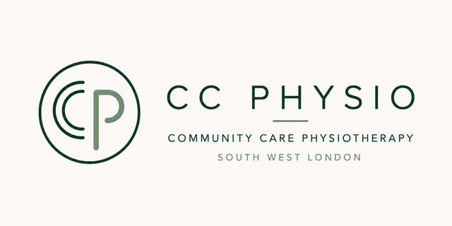

Assessment at home within ten working days of your go-ahead, a written report you can act on, and treatment from an NHS-trained physiotherapist across South West London.
Community Care Physio is led by an NHS-trained physiotherapist with experience in neurological rehabilitation, elderly care, falls prevention and musculoskeletal conditions. Every appointment is one-to-one, at the client's home or care home, with the same clinician throughout.
Travel included across South West London (all SW postcodes), Morden SM4, Mitcham CR4, Kingston KT2, New Malden KT3 and Richmond TW9–TW10.
Nearby, £15 per visit: Kingston KT1, Worcester Park KT4, Surbiton KT5, Sutton and Carshalton SM1–SM3 and SM5–SM6, Teddington TW11, Twickenham TW1, Hammersmith W6, Kensington W8, West Kensington W14, Chiswick W4, Paddington W2, Dulwich and Norwood SE19–SE27, Camberwell SE5, Kennington SE11, Thornton Heath CR7.
Extended, £35 per visit: other postcodes by arrangement. The band is confirmed with the quote, before the first visit, and matches our online postcode checker.
We act as treating therapist only and do not provide expert-witness reports. We do not provide 24-hour or emergency care; urgent concerns are directed to the GP or 999. Hydrotherapy and gym-based rehabilitation are not offered.
| Acknowledgement | 1 working day |
| Initial assessment | within 10 working days |
| Assessment report | within 5 working days |
| Progress / discharge | within 10 working days of the visit |
| Urgent | email first to check availability |
A deliberately small practice: a limited number of home visits each week so that every client keeps the same clinician. Timescales are targets we plan around; we confirm availability at acknowledgement and tell you promptly if a target cannot be met.
Subjective history, medication and precautions, falls history, social situation and current care. Objective assessment of range, strength, tone, balance, gait, transfers and functional tasks in the client's own environment, including stairs, bathroom and outdoor access where relevant. Risk assessment covering falls, moving and handling, and the home environment. Full physiological observations (NEWS2) at the first three sessions, and continued beyond that where monitoring is indicated; treatment deferred and the GP informed if the client is not medically fit on the day.
At every initial assessment, a core set that establishes safety and a baseline:
Added where the assessment indicates, depending on the client: Berg Balance Scale, Mini-BESTest, 10-metre walk, Barthel Index, pain rating and condition-specific measures. Measures are repeated at each report where still appropriate.
| Report | Contents |
|---|---|
| Assessment | Findings, baseline measures, risks, SMART goals, recommended sessions and frequency, equipment, costed plan |
| Progress | Measures repeated, goals reviewed, plan and cost updated, any change in risk |
| Discharge | Outcomes against goals, home programme, onward referrals, equipment and community recommendations |
Plain English for case managers, funders and families, clinical detail in appendices. Delivered as password-protected PDF by email; the password is agreed at acceptance and sent by text, never by email.
Hands-on treatment, strength and task-specific training, balance and gait re-education, and a home exercise programme with written and photo instructions; carers are shown how to support practice. Sessions are 45 minutes, or 60 where complexity or fatigue requires it.
| Service | Standard | Complex needs |
|---|---|---|
| Initial assessment at home, 60 min | £100 | £130 |
| Assessment report | £50 | £50 |
| Follow-up session, 45 min | £75 | £90 |
| Extended session, 60 min | £90 | £105 |
| Progress or discharge report | £50 | £50 |
| Additional letters or liaison documents (GP, consultant, OT) | £50 per document | |
| Travel outside the core area, per visit | £15 nearby · £35 extended | |
Applies where the client needs more clinical time: neurological conditions, recent hospital discharge, high falls risk, cognitive impairment, several long-term conditions, complex transfers, or where carers and care-home staff need to be involved. Agreed with you before the first visit, never added afterwards.
Visits cancelled with less than 24 hours' notice, or where the client is not available at the agreed time, are charged at the session fee. No charge where the cancellation is ours. Where the visit is rebooked within the same week we may waive the charge at our discretion.
The initial assessment and report are chargeable whether or not treatment follows. If the assessment shows the client's needs are outside our scope, the report says so, with onward recommendations, and we decline further treatment. We may also end treatment where it is no longer safe or clinically appropriate, giving written notice and recommendations.
This pack is for information. The written quote and terms of engagement sent with each accepted referral govern the work.
Adult safeguarding trained. Concerns are raised with the client's local authority safeguarding team and with you as case manager, in line with the Care Act 2014. Mental capacity is considered whenever a decision is needed.
Clinical records are held in encrypted cloud storage under UK GDPR and the Data Protection Act 2018, retained for 8 years after discharge, or until a child's 25th birthday, whichever is later. Reports are sent as password-protected PDFs by email. Our privacy policy is at communitycarephysio.co.uk/privacy.
We obtain the client's consent before assessment and before reports are shared, and record it in writing at the first visit. Where the client lacks capacity we follow Mental Capacity Act 2005 best-interests principles. Photographs or video only with specific consent, for records and exercise instruction.
Raise any concern with Zakery directly in the first instance; acknowledged within 2 working days and answered in writing within 20 working days. Unresolved concerns may be taken to the HCPC (hcpc-uk.org) or, for data matters, the ICO (ico.org.uk).
Abridged and entirely fictional. A full report runs to three or four pages with clinical appendices.
Discharged from St George's 3 weeks ago after a fall with fractured right wrist (cast removed) and a 6-day admission. Two further falls at home since. Lives alone in a two-storey house; daughter visits daily. Previously independent outdoors with a stick; now not leaving the house and sleeping downstairs. Hypertension, osteoarthritis both knees. Precautions: none for weight-bearing; wrist to be protected from loading for 2 more weeks. Observations: NEWS2 0 (RR 16, HR 78, BP 148/86, SpO₂ 96%, afebrile).
| Measure | Baseline | Interpretation |
|---|---|---|
| Timed Up and Go | 21 s with stick | Impaired functional mobility |
| Tinetti (POMA) | 17 / 28 | High falls risk |
| Elderly Mobility Scale | 12 / 20 | Borderline for independent living |
| Berg Balance Scale | 34 / 56 | Confirms high falls risk; unsafe on turns and reaching |
| Edmonton Frail Scale | 9 / 17 | Moderate frailty |
| Stairs | Unable; fear and reduced quads strength (3+/5 R, 4/5 L) | Primary barrier to returning upstairs |
Home: loose rug in hallway, no rail on right of stairs, bath without board or rail. Mrs M.'s goals: sleep in her own bed upstairs; walk to the corner shop (250 m) with her daughter.
8 sessions over 6 weeks (twice weekly for 2 weeks, then weekly), 45 minutes, complex-needs rate given falls history and recent discharge. Focus: lower-limb strength, balance and gait training, graded stair practice, outdoor mobility, falls education and a daily home programme supervised by her daughter. Equipment: second stair rail and a bath board (specification included in this report). Progress report after session 6 with repeated measures.
| 8 × follow-up sessions, complex | £720 |
| Progress report after session 6; discharge report at completion | £100 |
| Travel | included (core area) |
| Total for approval | £820 |
Faster online: communitycarephysio.co.uk/refer. Or complete this page and email it to infoccphysio@gmail.com. Keep the clinical summary brief and do not attach discharge summaries or medical records; we arrange secure transfer once the referral is accepted. Fields marked * are required.